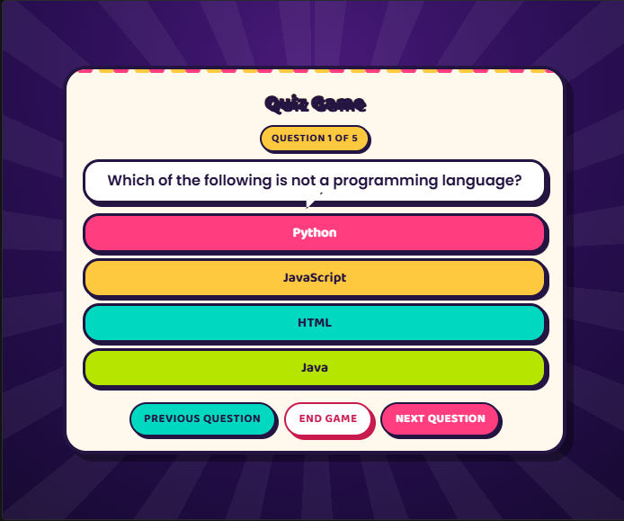
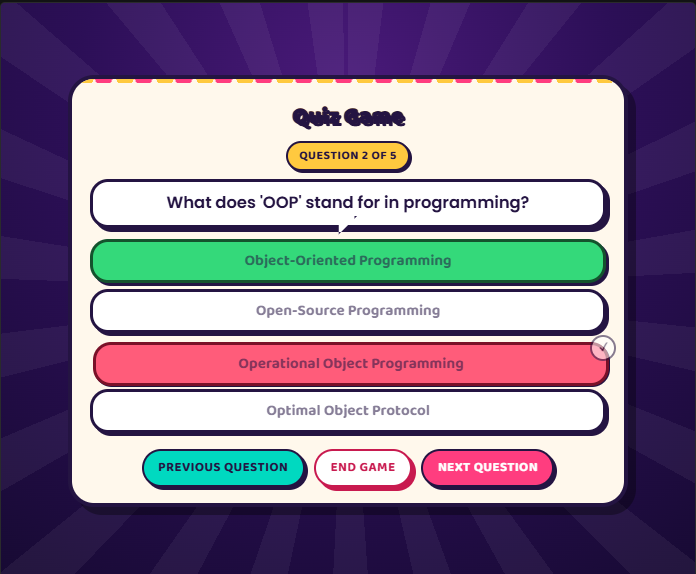

Portfolio / Projects / Quiz Game
A programming trivia game that runs entirely in the browser — free navigation between questions, an option to finish early, and a results screen. No frameworks, no backend, no dependencies.
Build something genuinely interactive with no server, no libraries and nothing to install — the browser and nothing else.
Questions render dynamically from a data array, state lives in JavaScript, and the visual direction went deliberately loud: a game-show look with marquee animation and buzzer-style buttons.
A responsive quiz that loads instantly, works offline and can be handed to anyone as a single folder.
Traced to a jQuery CDN conflict rather than the button's own code — fixed by removing a dependency the project never needed in the first place.
Reworked so that revisiting a question shows the state you left it in, instead of re-scoring or resetting it.
Several themes were tried and discarded before the game-show look, which was the first one that matched how the game actually plays.


Next project
SudoMind →